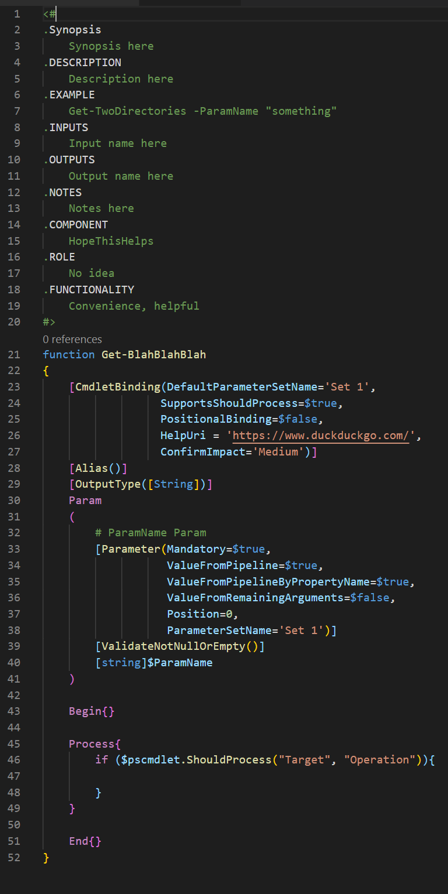
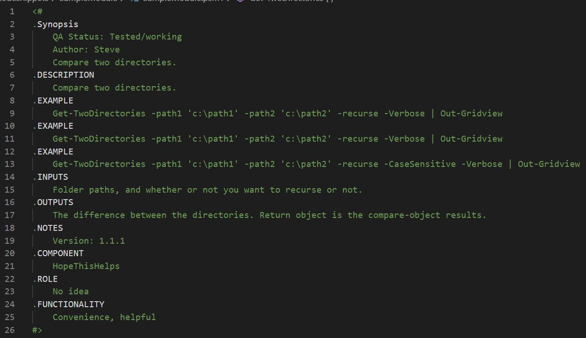
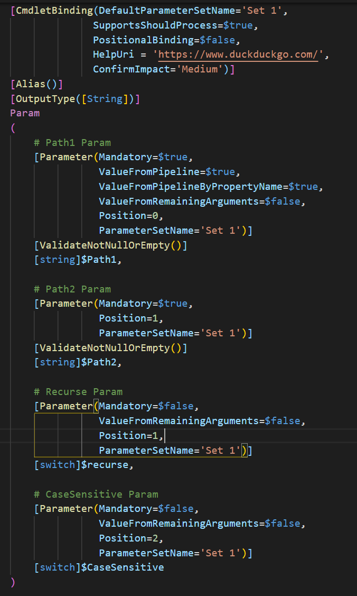

PowerShell Advanced Functions
Author: Steve
Do you have a lot of chunks of code that a) perform well and b) you tend to copy/paste everywhere? Code like this is perfect for turning into functions. In PowerShell, there is the concept of Advanced Functions which take advantage of built-in features of PowerShell such as piping, output streams, error handling, and so much more.
I think the best way to open up to this discussion is to preface this guide with an example. Open up this code in another tab to use as a reference: this link contains a PowerShell Module file containing an advanced function or two. In this article, I will reference portions of it to explain how it works.
A PowerShell Advanced Function is comprised of a documentation section, parameter declarations, and then begin, process, and end blocks.

Documentation is of course incredibly important, and in a function you should utilize the built-in sections that will integrate with PowerShell's Get-Help features, making it easy to reference as a "man page" of your function.

Next up after the documentation and initial declaration of the function is the 'param' section. Here you will define your data "inputs," or what you will specify when you are calling the function. Many things such as parameter order, requirements, validation, and parameter sets are configured here. How you do this will depend on how you want to structure your function. This important data will be used in the main portion of your function and we will discuss this below.

If you choose, you may logically order your code in the 'begin,' 'process,' and 'end' blocks as you ese fit. To be quite honest, I usually skip the "Begin" block as it tends to be more trouble than it is worth when it comes to pipeline input and strange behavior that can occur if this code is skipped. Your mileage may vary of course, but this is just my experience.
The "Process" block is where the majority of the action happens in a function. Here you will incorporate your code to perform its duty. Here is where you can tie it to the input parameters of the function specified in the "Param" section.
Concluding your function is the "End" block, usually only including a return statement, which your function can spit out as the completed object...The fruits of your labor, so to speak. Depending on your return object, you might be able to use it as input for another function or data that can be manipulated or exported in a myriad of built-in PowerShell methods such as Export-CSV or Out-Gridview.
Tips:
- Be careful about what output you are displaying during the course of the function. Don't just use "write-output" everywhere, as it will complicate the function's return stream and lead to unexpected results. Use the proper channels such as "write-verbose," "write-warning," "write-debug," and "write-error."
- Whenever possible, try to return a PowerShell custom object. This will make your function the most compatible with built-in features.
- Be careful about the use of the "break" statement in functions. It may cause unexpected termination of your code if the function call is wrapped in a try-catch block. Only use "break" when appropriate (and sparingly), and consider using booleans ("flags") to dictate when code either runs or doesn't run.
For further information, check out Microsoft's official documentation on advanced functions for a more deep dive and granular specifics.
Be also sure to check out the blog post Making PowerShell Modules.
Hope This Helps!